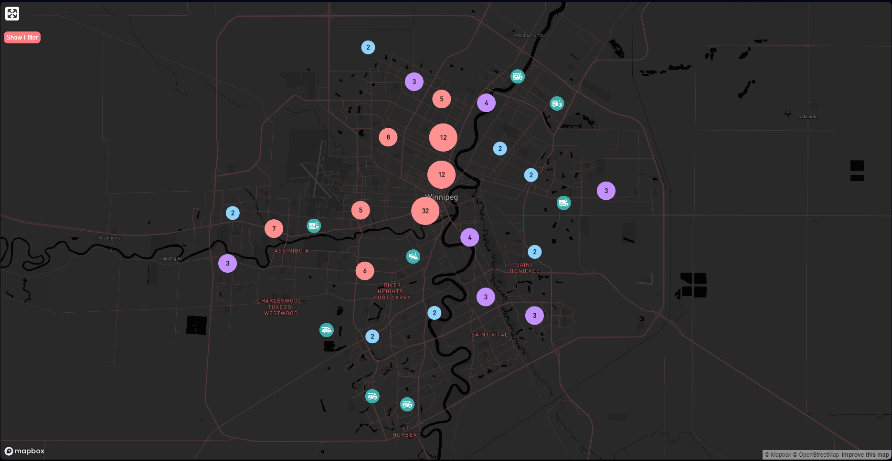
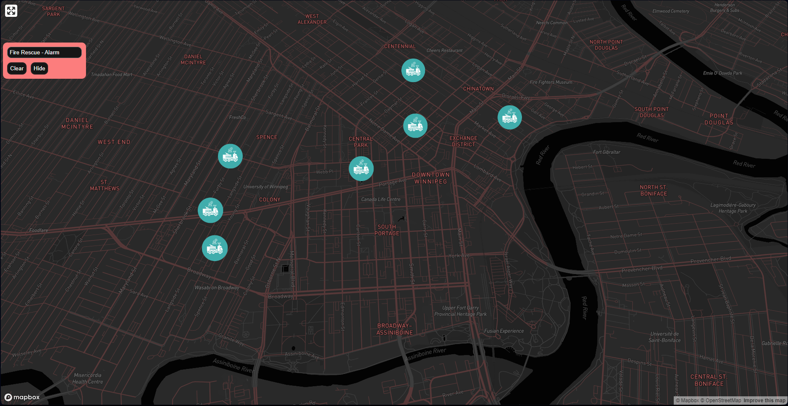

Winnipeg Fire Paramedic Service Response Data Visualization
Technology used:
- React
- Packages
- react-map-gl
- mapbox-gl
Description
This project uses WFPS Call Logs dataset from Winnipeg's open data API. Then the dataset is displayed on a map utilizing the Mapbox GL library. Currently it only shows incidents that occurred starting from midnight of the current day and updates regularly. It also offers a filter to be able to show data by incident type.
Take a lookGithub  